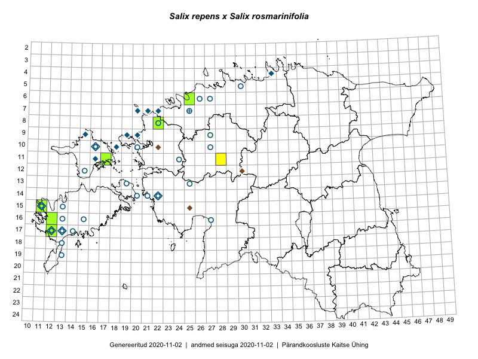

Salix repens × Salix rosmarinifolia — hanepaju × hundipaju
Salicaceae :: Salix repens ×rosmarinifolia (96)

Kaart põhineb 96 kirjel:
herbaareksemplare 96
Taime kaasaegsed ja ajaloolised leiukohad asuvad 38 ruudus.
Tingmärgid ja leidudega ruutude arvud periooditi uues (u) ja 2005 andmestikus (v)
| █ | vahemik | u1 | v2 |
|---|---|---|---|
| █ | 2006–2020 | 6 | – |
| ◆/◇ | 1971–2005 | 11 | 0 |
| ○ | 1921–1970 | 26 | 0 |
| + | kuni 1920 | 1 | 0 |
| × | hävinud | – | 0 |
| ? | kaheldav | – | 0 |
| Ruut | Leidja(d) | Leiuaeg | Kirje |
|---|---|---|---|
| 15-11 | Toomas Kukk, Ilmar Uibopuu, Mari Reitalu | 2018-05-28 | TAA0147026: Salix repens ×rosmarinifolia |
| 16-12 | Mari Reitalu | 2017-09-05 | TAA0143110: Salix repens ×rosmarinifolia |
| 17-12 | Mari Reitalu | 2017-08-31 | TAA0143109: Salix repens ×rosmarinifolia |
| 08-22 | Toomas Kukk, Ilmar Uibopuu | 2017-07-29 | TAA0141794: Salix repens ×rosmarinifolia |
| 11-17 | Eeva-Maria Jeletsky, Tarmo Niitla | 2015-06-20 | TAA0119303: Salix repens ×rosmarinifolia |
| 11-17 | Eeva-Maria Jeletsky, Tarmo Niitla | 2015-06-17 | TAA0119323: Salix repens ×rosmarinifolia |
| 06-25 | Toomas Kukk | 2006-08-21 | TAA0100263: Salix repens ×rosmarinifolia |
| 09-15 | Eerik Leibak | 2003-08-29 | TAA0100347: Salix repens ×rosmarinifolia |
| 10-18 | Toomas Kukk | 2001-08-28 | TAA0100344: Salix repens ×rosmarinifolia |
| 09-19 | Toomas Kukk | 1996-07-14 | TAA0100342: Salix repens ×rosmarinifolia |
| 09-19 | Toomas Kukk | 1996-07-14 | TAA0100343: Salix repens ×rosmarinifolia |
| 07-20 | Toomas Kukk | 1993-08-01 | TAA0100339: Salix repens ×rosmarinifolia |
| 10-16 | Heljo Krall | 1984-05-27 | TAA0100349: Salix repens ×rosmarinifolia |
| 09-20 | Linda Viljasoo | 1982-06-12 | TAA0100340: Salix repens ×rosmarinifolia |
| 09-20 | Linda Viljasoo | 1982-06-12 | TAA0100341: Salix repens ×rosmarinifolia |
| 07-22 | Heljo Krall, Linda Viljasoo | 1981-07-03 | TAA0100335: Salix repens ×rosmarinifolia |
| 07-22 | Heljo Krall | 1981-07-03 | TAA0100278: Salix repens ×rosmarinifolia |
| 07-22 | Heljo Krall | 1981-07-03 | TAA0100336: Salix repens ×rosmarinifolia |
| 07-22 | Heljo Krall | 1981-07-03 | TAA0100337: Salix repens ×rosmarinifolia |
| 07-21 | Linda Viljasoo | 1981-07-01 | TAA0100338: Salix repens ×rosmarinifolia |
| 10-16 | Linda Viljasoo, Heljo Krall | 1981-05-27 | TAA0100356: Salix repens ×rosmarinifolia |
| 10-16 | Linda Viljasoo, Heljo Krall | 1981-05-27 | TAA0100358: Salix repens ×rosmarinifolia |
| 10-16 | Linda Viljasoo | 1981-05-27 | TAA0100353: Salix repens ×rosmarinifolia |
| 11-16 | Heljo Krall, Linda Viljasoo | 1981-05-27 | TAA0100355: Salix repens ×rosmarinifolia |
| 10-16 | Heljo Krall, Linda Viljasoo | 1981-05-27 | TAA0100357: Salix repens ×rosmarinifolia |
| 15-11 | A. Toomel | 1980-08-07 | TAA0100282: Salix repens ×rosmarinifolia |
| 04-33 | Linda Viljasoo | 1974-07-20 | TAA0100359: Salix repens ×rosmarinifolia |
| 10-16 | M. Kask | 1970-07-13 | TAA0100354: Salix repens ×rosmarinifolia |
| 10-16 | Heljo Krall | 1969-07-09 | TAA0100350: Salix repens ×rosmarinifolia |
| 10-16 | Heljo Krall | 1969-07-09 | TAA0100351: Salix repens ×rosmarinifolia |
| 17-13 | Linda Viljasoo | 1964-06-19 | TAA0100283: Salix repens ×rosmarinifolia |
| 06-27 | Linda Viljasoo | 1964-06-10 | TAA0100364: Salix repens ×rosmarinifolia |
| 14-22 | Helga Tamm, Agnes Ojaveer, M. Ojaveer | 1962-07-17 | TAA0100331: Salix repens ×rosmarinifolia |
| 14-21 | Linda Viljasoo | 1962-05-24 | TAA0100326: Salix repens ×rosmarinifolia |
| 14-21 | Linda Viljasoo | 1962-05-24 | TAA0100327: Salix repens ×rosmarinifolia |
| 14-21 | Linda Viljasoo | 1962-05-24 | TAA0100330: Salix repens ×rosmarinifolia |
| 16-13 | Linda Viljasoo | 1962-05-21 | TAA0100296: Salix repens ×rosmarinifolia |
| 16-13 | Linda Viljasoo | 1962-05-21 | TAA0100297: Salix repens ×rosmarinifolia |
| 16-13 | Linda Viljasoo | 1962-05-21 | TAA0100301: Salix repens ×rosmarinifolia |
| 16-13 | Linda Viljasoo | 1962-05-21 | TAA0100302: Salix repens ×rosmarinifolia |
| 16-13 | Linda Viljasoo | 1962-05-21 | TAA0100303: Salix repens ×rosmarinifolia |
| 16-13 | Linda Viljasoo | 1962-05-21 | TAA0100304: Salix repens ×rosmarinifolia |
| 15-11 | Linda Viljasoo | 1962-05-21 | TAA0100306: Salix repens ×rosmarinifolia |
| 15-11 | Linda Viljasoo | 1962-05-21 | TAA0100307: Salix repens ×rosmarinifolia |
| 15-13 | Linda Viljasoo | 1962-05-21 | TAA0100317: Salix repens ×rosmarinifolia |
| 16-13 | Linda Viljasoo | 1962-05-21 | TAA0100320: Salix repens ×rosmarinifolia |
| 15-11 | Linda Viljasoo | 1962-05-20 | TAA0100295: Salix repens ×rosmarinifolia |
| 15-11 | Linda Viljasoo | 1962-05-20 | TAA0100305: Salix repens ×rosmarinifolia |
| 15-11 | Linda Viljasoo | 1962-05-20 | TAA0100316: Salix repens ×rosmarinifolia |
| 18-13 | Linda Viljasoo | 1962-05-18 | TAA0100318: Salix repens ×rosmarinifolia |
| 18-13 | Linda Viljasoo | 1962-05-17 | TAA0100300: Salix repens ×rosmarinifolia |
| 18-13 | Linda Viljasoo | 1962-05-17 | TAA0100308: Salix repens ×rosmarinifolia |
| 18-13 | Linda Viljasoo | 1962-05-17 | TAA0100309: Salix repens ×rosmarinifolia |
| 18-13 | Linda Viljasoo | 1962-05-17 | TAA0100310: Salix repens ×rosmarinifolia |
| 13-19 | Linda Viljasoo | 1962-05-17 | TAA0100321: Salix repens ×rosmarinifolia |
| 14-20 | Linda Viljasoo | 1962-05-17 | TAA0100322: Salix repens ×rosmarinifolia |
| 17-12 | Linda Viljasoo | 1961-05-18 | TAA0100284: Salix repens ×rosmarinifolia |
| 17-12 | Linda Viljasoo | 1961-05-18 | TAA0100285: Salix repens ×rosmarinifolia |
| 17-12 | Linda Viljasoo | 1961-05-18 | TAA0100286: Salix repens ×rosmarinifolia |
| 17-12 | Linda Viljasoo | 1961-05-18 | TAA0100287: Salix repens ×rosmarinifolia |
| 17-14 | Linda Viljasoo | 1961-05-18 | TAA0100289: Salix repens ×rosmarinifolia |
| 17-14 | Linda Viljasoo | 1961-05-18 | TAA0100290: Salix repens ×rosmarinifolia |
| 17-12 | Linda Viljasoo | 1961-05-18 | TAA0100291: Salix repens ×rosmarinifolia |
| 17-12 | Linda Viljasoo | 1961-05-18 | TAA0100292: Salix repens ×rosmarinifolia |
| 17-12 | Linda Viljasoo | 1961-05-18 | TAA0100293: Salix repens ×rosmarinifolia |
| 17-12 | Linda Viljasoo | 1961-05-18 | TAA0100294: Salix repens ×rosmarinifolia |
| 16-15 | Linda Viljasoo | 1961-05-18 | TAA0100315: Salix repens ×rosmarinifolia |
| 17-14 | Linda Viljasoo | 1961-05-17 | TAA0100288: Salix repens ×rosmarinifolia |
| 14-21 | Heljo Krall | 1961-05-17 | TAA0100332: Salix repens ×rosmarinifolia |
| 14-21 | Heljo Krall | 1961-05-17 | TAA0100333: Salix repens ×rosmarinifolia |
| 14-21 | Heljo Krall | 1961-05-17 | TAA0100334: Salix repens ×rosmarinifolia |
| 08-22 | Visolde Puusepp, Agnes Ojaveer | 1960-07-06 | TAA0100324: Salix repens ×rosmarinifolia |
| 08-22 | Agnes Ojaveer, Visolde Puusepp | 1960-07-06 | TAA0100325: Salix repens ×rosmarinifolia |
| 16-27 | Linda Viljasoo, H. Karu | 1960-05-13 | TAA0100366: Salix repens ×rosmarinifolia |
| 17-12 | H. Karu | 1959-07-17 | TAA0100281: Salix repens ×rosmarinifolia |
| 15-11 | Linda Viljasoo | 1959-06-21 | TAA0100314: Salix repens ×rosmarinifolia |
| 15-11 | H. Karu | 1959-06-20 | TAA0100313: Salix repens ×rosmarinifolia |
| 15-11 | Linda Viljasoo | 1959-05-21 | TAA0100311: Salix repens ×rosmarinifolia |
| 15-11 | Linda Viljasoo | 1959-05-21 | TAA0100312: Salix repens ×rosmarinifolia |
| 07-25 | H. Rebassoo | 1958-08-28 | TAA0100361: Salix repens ×rosmarinifolia |
| 05-30 | Helga Tamm, H. Karu | 1958-06-15 | TAA0100363: Salix repens ×rosmarinifolia |
| 10-16 | Helga Tamm, H. Karu | 1958-06-12 | TAA0100348: Salix repens ×rosmarinifolia |
| 10-16 | Helga Tamm, H. Karu | 1958-06-12 | TAA0100352: Salix repens ×rosmarinifolia |
| 12-15 | Helga Tamm, H. Karu | 1958-06-11 | TAA0100346: Salix repens ×rosmarinifolia |
| 11-24 | H. Karu | 1958-05-28 | TAA0100328: Salix repens ×rosmarinifolia |
| 11-24 | H. Karu | 1958-05-28 | TAA0100329: Salix repens ×rosmarinifolia |
| 07-25 | H. Rebassoo | 1958-05-25 | TAA0100362: Salix repens ×rosmarinifolia |
| 10-20 | M. Kask | 1956-06-21 | TAA0100323: Salix repens ×rosmarinifolia |
| 06-26 | Vilja Saar | 1956-06 | TAA0100360: Salix repens ×rosmarinifolia |
| 13-25 | M. Kask | 1951-10-06 | TAA0100365: Salix repens ×rosmarinifolia |
| 09-27 | Heinrich Aasamaa | 1939-09-07 | TAM0054609: Salix repens ×rosmarinifolia |
| 10-27 | Heinrich Aasamaa | 1936-08-17 | TAM0054610: Salix repens ×rosmarinifolia |
| 10-16 | Gustav Vilbaste | 1931-07-23 | TAA0100345: Salix repens ×rosmarinifolia |
| 19-13 | Johannes Talts | 1927-06-24 | TAA0100298: Salix repens ×rosmarinifolia |
| 19-13 | Johannes Talts | 1927-06-24 | TAA0100299: Salix repens ×rosmarinifolia |
| 07-25 | W. Niclasen | 1904-05-23 | TAM0122368: Salix repens ×rosmarinifolia |
Ruutude arv uue atlase andmekogu järgi. Muuhulgas arvestab vanemat herbaariumi, 2005. aasta atlase välitöölehtedelt uuesti digitaliseeritud andmeid jne. Uue atlase andmekogust pärinevad andmed on kaardile kantud siniste sümbolitega.↩︎
Ruutude arv 2005. aasta atlase (Kukk, T., Kull, T., Eesti taimede levikuatlas. Eesti Maaülikool, Põllumajandus- ja Keskkonnainstituut, Tartu, 2005) järgi. Andmeallikana on kasutatud levik.exe programmi, kus igas ruudus on registreeritud vaid uusim leid. Seetõttu on vanemate perioodide kohta andmed puudulikud. Kasutatud levik.exe andmestikus leidub mõningaid kõrvalekaldeid atlase trükis ilmunud versioonist, sagedamini tarnade ja käpaliste seas. Lisaks leidub selles andmestikus valik liike (peamiselt väheste leidudega tulnuktaimed), mille kaarte trükis ei avaldatud. Vana atlase andmed ruutudest, milles ei ole uue atlase andmekogus leide enne 2006. aastat, on kaardil esitatud punaste sümbolitega. Vana atlase andmetel hävinud ja kaheldavaid leiukohti pole hilisemate (taas)leidude põhjal korrigeeritud.↩︎